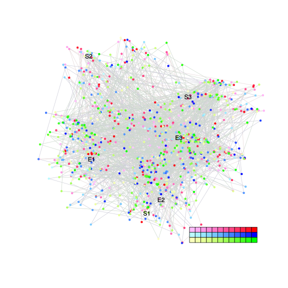
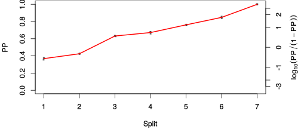
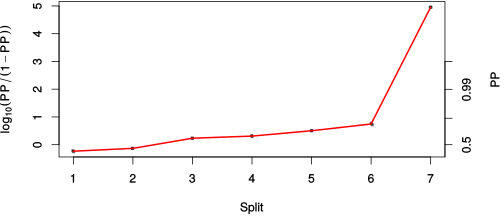

| chain # | burnin | subsample | Iterations (remaining) | command line | subdirectory | directory |
|---|---|---|---|---|---|---|
| 1 | 10000 | 1 | 90000 | bali-phy E6_AA_red3_BetaGamma_Lambda.fas -s 32162 -n BetaGamma_Lambda_c1 | BetaGamma_Lambda_c1-1 | /DATA/work/ONCOGENEVOL/database/trees/Bali-Phy/red3/E6 |
| 2 | 10000 | 1 | 90000 | bali-phy E6_AA_red3_BetaGamma_Lambda.fas -s 41596 -n BetaGamma_Lambda_c2 | BetaGamma_Lambda_c2-1 | /DATA/work/ONCOGENEVOL/database/trees/Bali-Phy/red3/E6 |
| 3 | 10000 | 1 | 90000 | bali-phy E6_AA_red3_BetaGamma_Lambda.fas -s 23987 -n BetaGamma_Lambda_c3 | BetaGamma_Lambda_c3-1 | /DATA/work/ONCOGENEVOL/database/trees/Bali-Phy/red3/E6 |
| P(data|M) = -4420.894 +- 0.133 | Complete sample: 22250 topologies | 95% Bayesian credible interval: 12953 topologies |
Phylogeny Distribution

| Partition support: Summary |
| Partition support graph: SVG |
{kind=link}
| 50% consensus | Newick (+PP) | SVG | |||||
| 66% consensus | Newick (+PP) | SVG | |||||
| 80% consensus | Newick (+PP) | SVG | |||||
| 90% consensus | Newick (+PP) | SVG | |||||
| 95% consensus | Newick (+PP) | SVG | |||||
| 99% consensus | Newick (+PP) | SVG | |||||
| 100% consensus | Newick (+PP) | SVG | |||||
| MAP | Newick (+PP) | SVG | |||||
| greedy | Newick (+PP) | SVG |
{kind=link}
{kind=link}
{kind=link}
{kind=link}
{kind=link}
{kind=link}
{kind=link}
{kind=link}
Alignment Distribution
Partition 1
| Diff | Min. %identity | # Sites | Constant | Informative | ||||
|---|---|---|---|---|---|---|---|---|
| Initial | FASTA | HTML | Diff | 1.09% | 274 | 1 (0.365%) | 162 (59.1%) | |
| Best (WPD) | FASTA | HTML | AU | 11.6% | 363 | 10 (2.75%) | 112 (30.9%) |
Mixing
{kind=link}
{kind=link}
| burnin (scalar) | ESS (scalar) | ESS (partition) | ASDSF | MSDSF | PSRF-CI80% | PSRF-RCF |
|---|---|---|---|---|---|---|
| 863 | 4979 | 5504.336 | 0.006 | 0.016 | 1.001 | 1.005 |
Projection of RF distances for the first 3 chains3D | Variation of split PPs across chains |
Scalar variables
| Statistic | Median | 95% BCI | ACT | ESS | burnin | PSRF-CI80% | PSRF-RCF |
|---|---|---|---|---|---|---|---|
| prior | -212.6 | (-245.2, -185.9) | 54.23 | 4979 | 580 | 1 | 0.9999 |
| prior_A1 | -215.4 | (-245.1, -192.3) | 21.42 | 12603 | 342 | 0.9998 | 0.9995 |
| likelihood | -4406 | (-4422, -4391) | 16.27 | 16597 | 121 | 1 | 0.9995 |
| logp | -4619 | (-4648, -4593) | 51.25 | 5267 | 410 | 1 | 1.002 |
| Heat.beta | 1 | ||||||
| Scale1 | 7.671 | (4.533, 11.82) | 1.031 | 261840 | 121 | 0.9999 | 0.9996 |
| S1.F.pi.A | 0.05651 | (0.04454, 0.06971) | 8.374 | 32244 | 477 | 1 | 1.005 |
| S1.F.pi.R | 0.05309 | (0.04106, 0.06627) | 8.262 | 32680 | 436 | 1 | 1.001 |
| S1.F.pi.N | 0.03456 | (0.02557, 0.0446) | 8.026 | 33640 | 242 | 1.001 | 0.9966 |
| S1.F.pi.D | 0.05023 | (0.03828, 0.06321) | 8.258 | 32697 | 597 | 0.9999 | 0.9945 |
| S1.F.pi.C | 0.0792 | (0.06195, 0.09788) | 8.077 | 33427 | 605 | 1 | 0.9897 |
| S1.F.pi.Q | 0.0353 | (0.02654, 0.04466) | 8.501 | 31759 | 667 | 0.9997 | 0.9981 |
| S1.F.pi.E | 0.06027 | (0.04734, 0.07397) | 8.541 | 31613 | 294 | 1 | 0.9937 |
| S1.F.pi.G | 0.0689 | (0.05268, 0.08653) | 8.227 | 32819 | 744 | 1 | 0.999 |
| S1.F.pi.H | 0.02621 | (0.01776, 0.03539) | 8.591 | 31429 | 253 | 1 | 0.9998 |
| S1.F.pi.I | 0.04775 | (0.03722, 0.05933) | 8.248 | 32736 | 863 | 0.9999 | 1.002 |
| S1.F.pi.L | 0.1204 | (0.1009, 0.1409) | 8.151 | 33123 | 326 | 1 | 1 |
| S1.F.pi.K | 0.04205 | (0.03172, 0.05305) | 8.258 | 32694 | 407 | 1 | 1.002 |
| S1.F.pi.M | 0.008595 | (0.004462, 0.01356) | 8.046 | 33556 | 387 | 1 | 0.993 |
| S1.F.pi.F | 0.06235 | (0.04834, 0.07728) | 8.181 | 33003 | 389 | 1 | 0.994 |
| S1.F.pi.P | 0.0442 | (0.032, 0.05753) | 8.427 | 32041 | 231 | 0.9996 | 0.9998 |
| S1.F.pi.S | 0.05332 | (0.04164, 0.066) | 8.291 | 32565 | 753 | 1 | 1.005 |
| S1.F.pi.T | 0.04671 | (0.03583, 0.05875) | 7.898 | 34187 | 353 | 0.9996 | 0.9991 |
| S1.F.pi.W | 0.01025 | (0.004734, 0.01677) | 8.077 | 33429 | 475 | 1 | 0.9975 |
| S1.F.pi.Y | 0.03742 | (0.02739, 0.04862) | 8.155 | 33110 | 443 | 0.9996 | 1.005 |
| S1.F.pi.V | 0.05777 | (0.04595, 0.07081) | 8.025 | 33644 | 240 | 0.9998 | 1.003 |
| I1.RS07.meanIndelLengthMinus1 | 10.47 | (6.224, 16.11) | 4.259 | 63396 | 229 | 1 | 0.9982 |
| I1.RS07.logLambda | -4.672 | (-5.155, -4.213) | 3.439 | 78519 | 107 | 1 | 0.9995 |
| |A1| | 355 | (332, 379) | 17.74 | 15224 | 264 | 0.9802 | 0.9993 |
| #indels1 | 24 | (21, 28) | 25.33 | 10659 | 342 | 0.8 | 0.998 |
| |indels1| | 241 | (207, 283) | 5.093 | 53019 | 205 | 0.9745 | 1.001 |
| #substs1 | 814 | (790, 833) | 39.55 | 6826 | 245 | 0.9667 | 0.9978 |
| Scale1*|T| | 9.963 | (9.127, 10.82) | 4.06 | 66502 | 82 | 1 | 0.9991 |
| |A| | 355 | (332, 379) | 17.74 | 15224 | 264 | 0.9802 | 0.9993 |
| #indels | 24 | (21, 28) | 25.33 | 10659 | 342 | 0.8 | 0.998 |
| |indels| | 241 | (207, 283) | 5.093 | 53019 | 205 | 0.9745 | 1.001 |
| #substs | 814 | (790, 833) | 39.55 | 6826 | 245 | 0.9667 | 0.9978 |
| |T| | 1.299 | (0.7611, 1.965) | 1.019 | 265098 | 145 | 1 | 0.9996 |